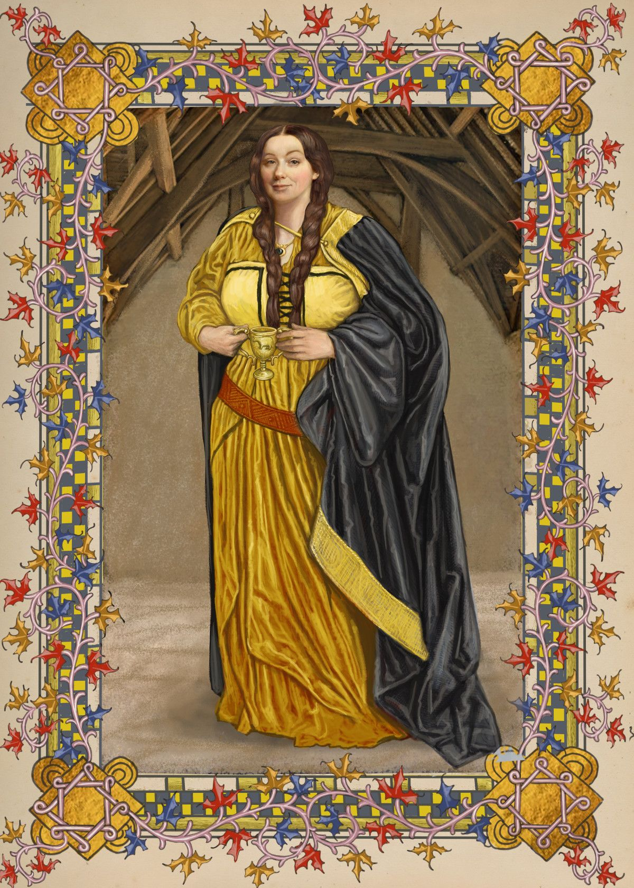
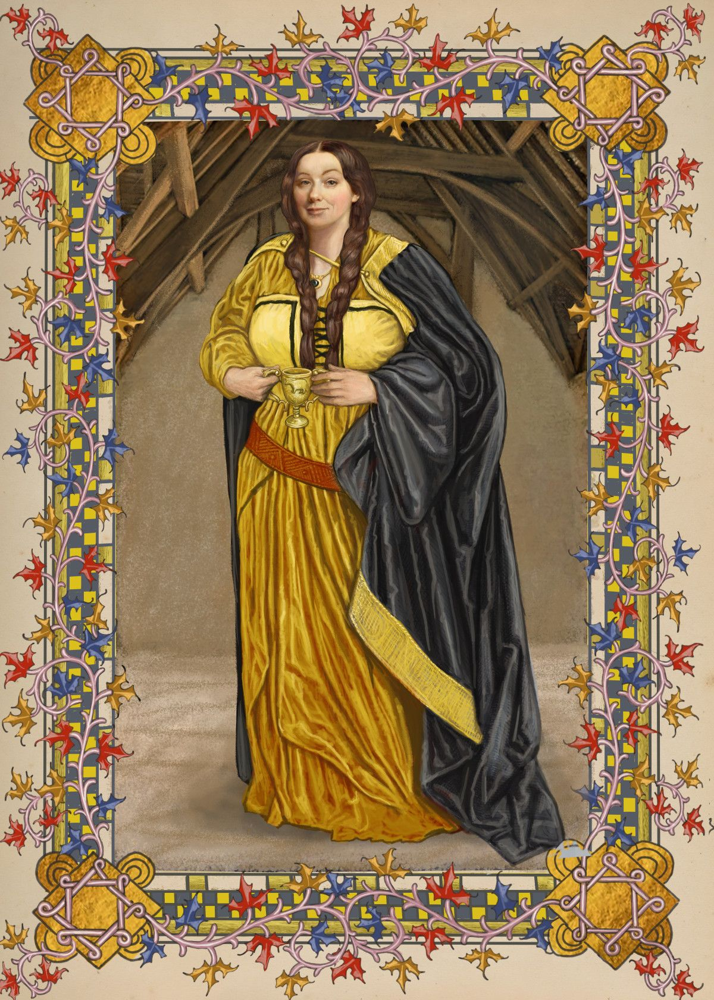

"You might belong in Hufflepuff, Where they are just and loyal, Those patient Hufflepuffs are true, And unafraid of toil." — Sorting Hat
Hufflepuff was one of the four Houses of Hogwarts School of Witchcraft and Wizardry. Its founder was the medieval witch Helga Hufflepuff. Hufflepuff was the most inclusive among the four houses, valuing hard work, dedication, patience, loyalty, and fair play rather than a particular aptitude in its members. The emblematic animal was a badger, and yellow and black were its house colours. The Head of Hufflepuff was Pomona Sprout, and the Fat Friar was the House's patron ghost.
Hufflepuff corresponded roughly to the element of earth, and it was for that reason that the House colours were chosen: yellow represented wheat, while black was emblematic of soil. The Hufflepuff point hourglass contained yellow diamonds. Students sorted into Hufflepuff often demonstrated strong abilities in Herbology, owing to their correspondence to earth.
Name
Commentary